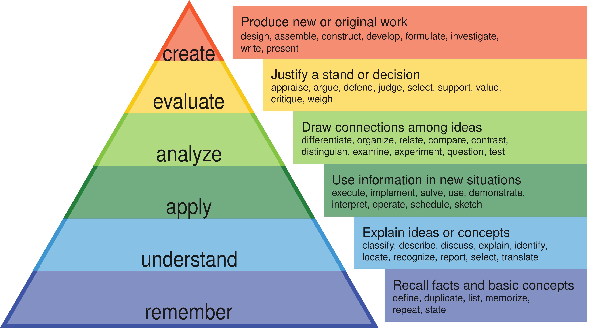

Learning Log 1 - Learning plan for my next OSSU run
Over the past few weeks, I’ve read the book ultra learning and watched a bunch of YouTube videos about learning from learning experts. A list of all the videos I watched will be at the end of this post. I took notes on a few videos, but decided to just watch, understand, and mentally process the rest of the videos. I’m thinking about going back and taking notes on the most important strategies/techniques. For the Ultralearning book, I actually did summaries along with my thoughts in a series of blog posts here. In this blog post, I want to discuss what I’ve learned and how I plan to apply it on my next OSSU run.
From the Ultralearning book, I learned the 9 principles of learning when engaging in any learning project. These are:
- Metalearning
- Focus
- Directness
- Drill
- Retrieval
- Feedback
- Retention
- Intuition
- Experimentation
Instead of repeating them here in this blog post, I will instead refer you to the blog posts I wrote for each of these principles here. There, I write what the book says about each principle in a more condensed form, and I discuss how they relate to my OSSU journey or just any of my own thoughts that pop up.
What I talk about below will be related to one or more of these principles, perhaps indirectly. For example, when I discuss encoding and deep processing, a by-product of that is building intuition. The spaced repetition strategy I have below supports retention, and uses retrieval. Whatever principle is not touched upon below is discussed in the ultralearning blogs, so feel free to check those out for more. Most of what I discuss below are from the YouTube videos I watched about learning.
From Justin Sung, a learning expert on YouTube, I learned the idea of encoding. When we learn information, we "encode" it into our brains. The level/strength of encoding will depend on how deeply you process the information. With deeper/better processing, the neural connections are stronger, better-organized, and thus more likely to be remembered. Not only remembered, but fit in at the right spots in our mental models or knowledge structures. Once new information is connected with other previous knowledge, it is more likely to stick. The knowledge decay curve gets flatter. Note: Knowledge structures tend to be dynamic, so I must be flexible in my thinking and be open to changing my mental models if needed. We also won't remember everything at once like photographic memory. The knowledge will be retrieved when needed.
One way to implement deep processing is to engage in what’s called higher order thinking. Higher order thinking comes from Bloom’s taxonomy, which is a hierarchical model for processing information. Instead of taking the information and processing it in a shallow way by asking shallow questions, you analyze it, evaluate it, compare/contrast with other ideas, ask why, refine, practice it, create something with it, create analogies/metaphors, etc. This is naturally what a curious person might do. A learner who engages in higher order thinking is more likely to have stronger knowledge structures/scaffoldings. Bloom's taxonomy is not all there is to deep processing though. I wouldn't make it the holy grail of learning, but it does seem useful/important.

There's also the idea of active learning vs. passive learning. Active learning requires more mental effort. You think more about the concept you are learning, asking more questions and digging deeper to understand it. You also come up with examples to help with understanding, and attempt to understand things with your own thinking rather than simply accepting the informatoin given to you without much thought. Active learning is related to deep processing in the sense that when you deeply process information, you are engaging in active learning. Perhaps they can be used interchangeably.
Passive learning is just consuming the information in a shallow way, not asking questions or digging into the why or connecting it with what you already know. If I catch myself passively learning, I will try to switch to active or maybe take a break.
I have built a decent amount of computer science and programming knowledge over the years which will help me understand the concepts, facts, and procedures I come across in OSSU. The structures and mental models built can serve as reference points. I must also be open minded to changing or updating my knowledge structures if needed. I think as long as I focus on deep processing or active learning when going through OSSU, I can get away with doing less spaced repetition.
Active recall and spaced repetition are techniques for making things stick. By the way, there are many techniques. And there is so much learning theory out there. I want to recall below what I believe are the most important things I’ll be using in my next OSSU run.
Spaced Repetition and Active Recall
I’ve heard somewhere that repetition is the mother of all learning. The more you repeat something, the more likely it is to stick. In my next OSSU run, I want to have dedicated time for spaced repetition and active recall. Active recall will be happening every day. During my breaks, I will recall what I just learned. At the end of the day, I will recall. I will designate Saturday’s to free recalling what I’ve learned that week, and also review wherever needed. Will also spend time going on long walks and thinking about what I’ve learned. I will try to practice higher order thinking and think about analogies and connections to other info, etc. Then, the last Saturday of the month I will spend reviewing and free recalling what I’ve learned the whole month.
Deep Processing and Active Learning
Deep processing and active learning work better the more knowledge you have to work with. Since I already have a CS degree and experience programming professionally, I think I’ll be able to process the information better than if I was starting out. It’ll be more likely to stick. So I’m not worried too much about the exact details of how I’m going to exactly process things deeply. I’ll let my natural curiosity take over, but I will have high standards for processing the information. I’ll make sure to ask lots of questions, imagine scenarios, draw pictures, write things down, take notes, etc. For note taking, I want to make sure I process the information mentally first, rather than taking notes as I go along and falsely thinking that note taking = acquiring knowledge, which is not necessarily true.
I’ll be on guard to try to detect when I’m passively learning instead of actively learning. I tend to go into deep rabbit holes when I want to understand something. I’ll do more research, watch YouTube videos, etc. until I feel like I have a strong grasp on the concept or topic. I'll also take breaks, let the information marinate, and revisit it at a later time if I am struggling. With that being said, I will also identify when Not to exert too much effort. For example, sorting algorithms are not super important in my view, and since I already learned about them once, I feel like I could skim through or even skip this topic when it comes up.
Chunking or Compressing
The idea of chunking or compressing involves taking a concept consisting of multiple pieces and condensing it into a label or grouped information. You have a label to reference it, and once you access that reference you have an idea of the details underlying it. Sort of like a hyperlink connecting to a big website. The label could be a metaphor or analogy or a picture or a short summary or even a song. Compressing or chunking into a single thing helps to open up my working memory and juggle more ideas at the same time. Connect new information to what you already know. Identify the top 20% of the information that will yield 80% of the benefits, a.k.a. the highest leverage information. Considering context is important here too. Where does this information fit in the bigger picture? When does it apply? Etc. Chunks are built from focused attention, understanding, and practice.
Focused vs. Diffuse mode
Intensely focusing on active learning and then followed by a break where you’re not focusing at all is a great routine to follow. Taking breaks is important to allowing the brain to process the information more widely across its knowledge networks. I will aim to follow a 60-90 min focused session, with micro breaks along the way followed by a macro break of 10-20 minutes or more between sessions.
Reflection
I will constantly be reflecting on the information I’m learning. This is another powerful way to process the information. It’s sort of like a review, but you think more broadly about how the concepts could transfer, and how hard was the concept to grasp, what information seems to be more/less important, etc. At the end of this run, I will reflect each course by writing course reviews. It will allow me to reflect on what I learned and my learning techniques and how it could transfer and how it compares to previous courses and where it fits with respect to the next courses I’ll be taking.
Practice
I will do the homework, problem set exercises, and projects. I will give them an honest attempt for at least 16 minutes. If I am stuck, I will give it another 10 minutes of thought and attempt. Once I get truly stuck, I will take a break and come back to it later or look at the solution, understand it, and compare it with mine.
Teach to Learn
The Feynman technique. I will teach what I am learning to a wall or to myself in simple terms. When I do the review and free recall on Saturday’s, I will make sure to put some time in to teaching the concepts that I am learning. I’ll try to do this everyday though as I come across the concepts.
Actively carving out time and space to do deep thinking
Often we are not bottlenecked by execution but by clear thinking. It’s not a good idea to cram your deep thinking. A practical technique would be to dedicate at least 30 minutes in the evening to thinking, either on a walk or in a quiet spot with pen and paper. Organic free/deep thinking. This is not necessarily review, but also trying to think about the bigger picture and creative thinking. Entertain whatever naturally pops up in my head about the topic(s).
Other learning methods
There are many other learning methods/techniques, such as mind mapping, pre-learning, etc. I will be applying pre-learning by skimming over all the lectures and topics of a course before I begin to get a big picture view of the content before going sequentially lecture by lecture. This will help prime the brain for learning and make it easier to fit the details into the bigger picture. Mind maps I don’t think I’ll be using those very much. I’ll experiment with it a bit and see how it goes. I won’t be using Anki flash cards as I feel like the effort it takes to do this is not worth it compared to the other methods above because the above should produce enough learning value. Cued recall is less effective than free recall and Anki cards are better suited for other scenarios such as learning vocabulary in a language or remembering key terms in a medical class, not really important for building programming or computer science intuition and understanding.
Schedule
This is how I plan my learning schedule to look like:
Monday: CS50x for first session, then class based program design for rest of the day.
Tuesday: CS50x for first session, then math for CS for the rest of the day.
Wednesday: CS50x for first session, then software construction for the rest of the day.
Thursday: CS50x for first session, then math for CS rest of day.
Friday: CS50x for first session, then class based program design for rest of day.
Saturday: Practice free recall and review what I learned throughout the week. Go on walks to process thoughts. Maybe write summaries of what I’ve learned using free recall and reviewing if needed. Summaries with analysis.
Sunday: Rest day, study the Bible, do low intensity tasks.
So for that first week, I’ll be doing class based program design twice per week while software construction is once. The following week it will be once and the software construction will be twice. Then, it will keep alternating like this.
As before, I will log my time spent on each course. I’m logging my time as a way for me to gauge my level of effort each week and compare with my benchmark of at least 20 hours per week. It’ll allow me to see what I’m spending time on and keep myself accountable. The hours spent are not the best indicator of learning, because you can spend many hours passively learning, which is not very effective. What’s important of course is what’s actually done in those hours, including deeply processing information, active learning, or deliberately practicing.
Let’s see how this goes. Will post an update sometime during the next few months or at the end of this OSSU session. I have enough knowledge to move forward now. Will probably start sometime in June.
List of videos I’ve watched as a YouTube playlist: https://www.youtube.com/playlist?list=PLE1sf5Cn7AXrYvVls2X2fGfVP1Ednxckc